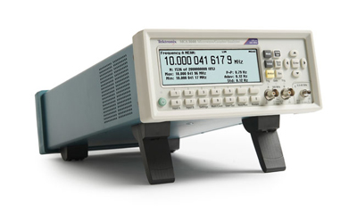

微波记数器/定时器

产品简介
□27 GHz 和40 GHz 型号
□一条微波分析仪通道
□两条额外的300 MHz 通道
□-35 dBm - +10 dBm 功率范围
□100 ps 单次时间分辨率
□12 位/ 秒频率分辨率
□25 ms (自动)或零 (手动) 采集时间
□3 mV 或更好的电压分辨率
□选配 1.5×10�C8
□通过USB/GPIB 总线(块模式) 高达15 k 样点/ 秒数据传送速 率
□每秒单独触发多达650 项测量
□自动测量: 频率, 周期, 比率, 时间间隔, 时间间隔误差, 脉宽, 上升时间/ 下降时间, 相角, 占空比, 最大电压, 最小电压, 峰 峰值电压
□集成功率表
□多参数显示
□趋势图模式
□测量统计模式
□直方图模式
□艾伦偏差
□零死区时间频率/ 周期测量
□后面板提供了USB 设备端口和GPIB 端口，快速连接PC
□GPIB接口支持全面兼容SCPI的编程能力，并提供了仿真模 式，可以即插即用更换现有的ATE 系统
□外部告警输入
□10 MHz 参考振荡器输出
□标配National Instrument 的LabVIEW SignalExpressTMTE 限定版软件，连通工作台
□选配TimeViewTM 调制域分析软件
应用行业
□ 设计和调试；
□ 教育和培训；
□ 制造测试和质量控制；
□ 服务和维修